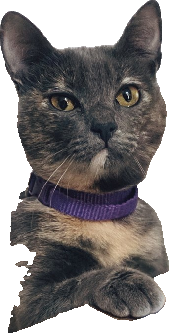

by barbara f tatsch
//@barbarafonsecavet

Toxoplasmose é doença do gato?
Muita gente acha que sim. Tem até quem pense em doar o gato quando descobre a gravidez.
Vem que eu te explico 💗
by barbara f tatsch
//@barbarafonsecavet
2/7
Não é bem assim.
A forma mais comum de pegar toxoplasmose é comendo: carne crua ou mal passada e verdura mal lavada.
by barbara f tatsch
//@barbarafonsecavet
3/7
O gato elimina pouco.
Ele só solta o parasita no cocô por poucas semanas, geralmente na primeira vez que se infecta.
by barbara f tatsch
//@barbarafonsecavet
4/7
E o cocô fresquinho não passa.
Ele leva de 1 a 5 dias pra ficar infectante. Limpar a caixinha todo dia já corta esse caminho.
by barbara f tatsch
//@barbarafonsecavet
5/7
Grávida? Fica com o gato.
Pede pra outra pessoa limpar a caixinha. Se não der, usa luva e lava bem as mãos depois.
by barbara f tatsch
//@barbarafonsecavet
6/7
Gato de apartamento
que come ração e não caça tem bem menos chance de se infectar.
by barbara f tatsch
//@barbarafonsecavet
7/7

Conhece uma tutora grávida?
Manda esse post pra ela 🫶